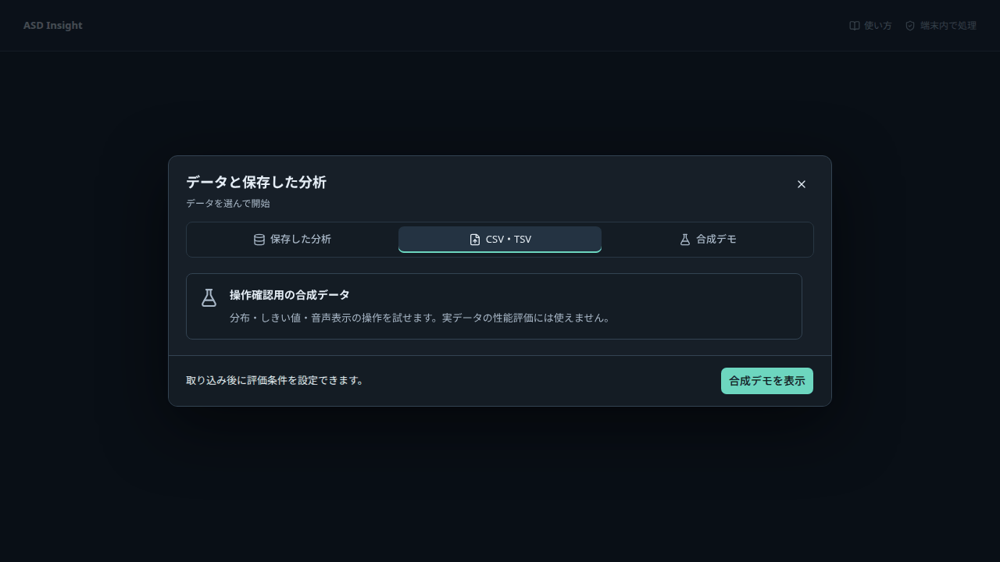
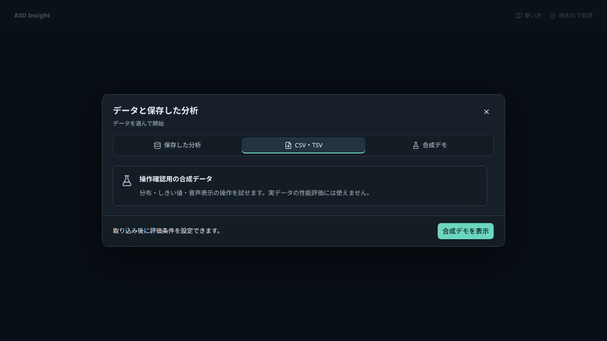
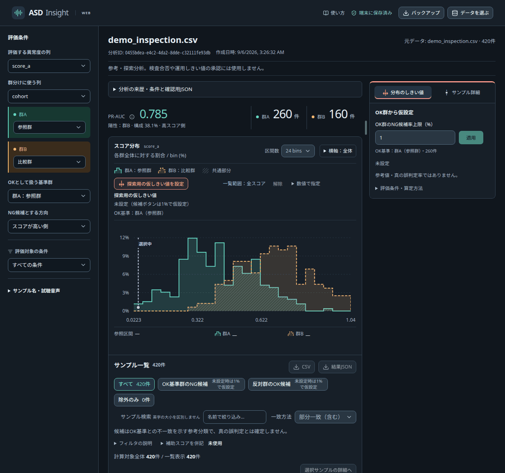
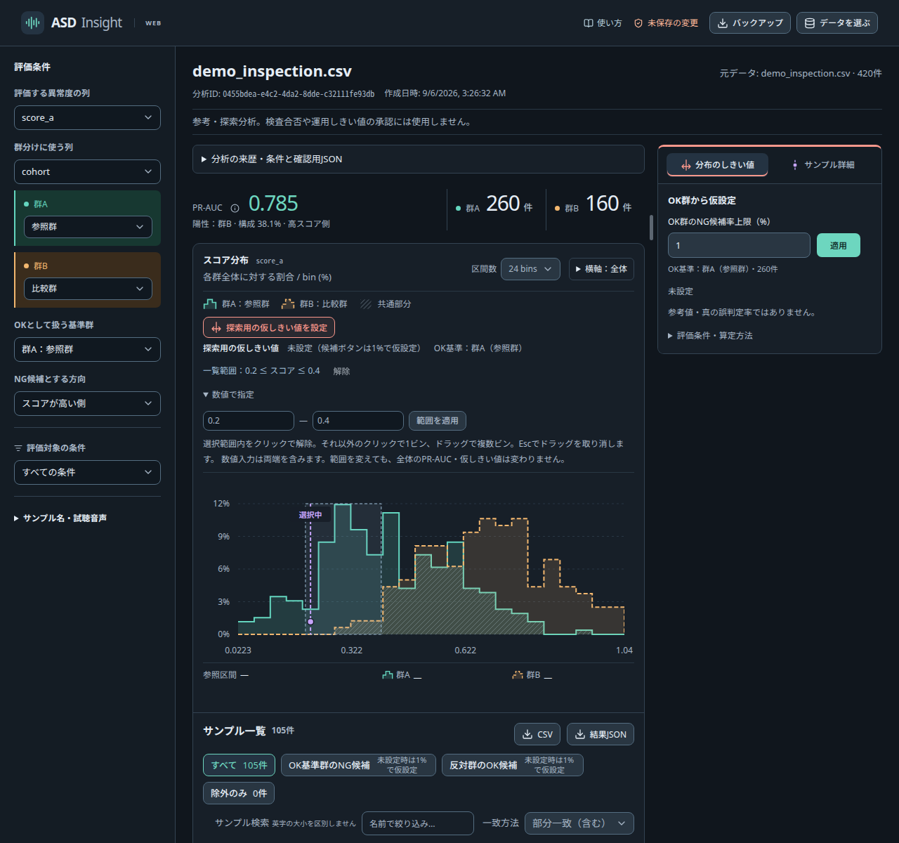
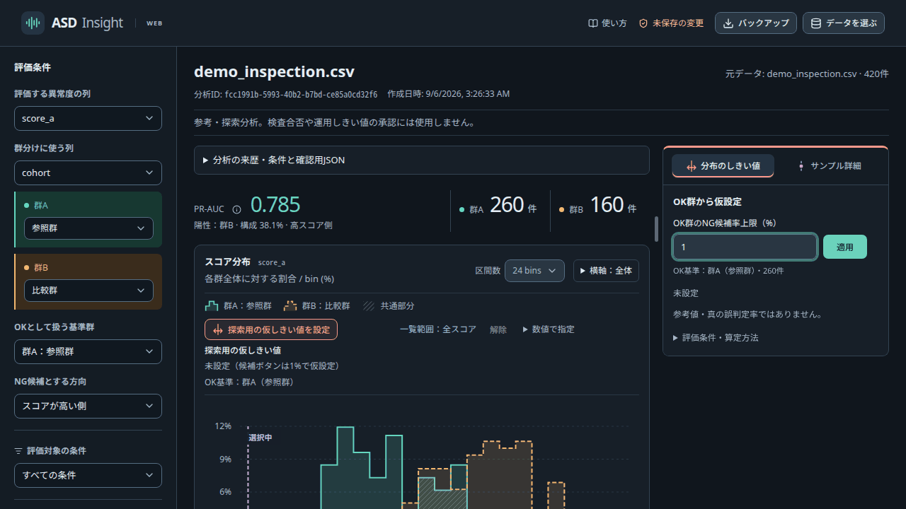
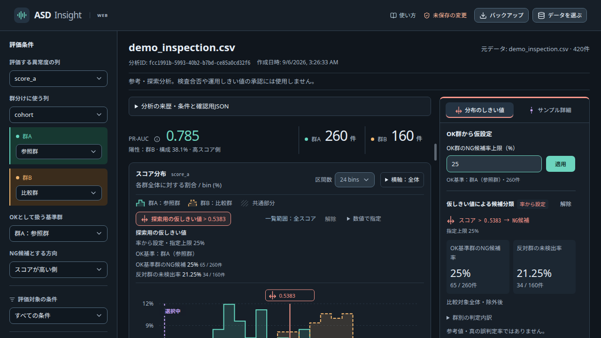
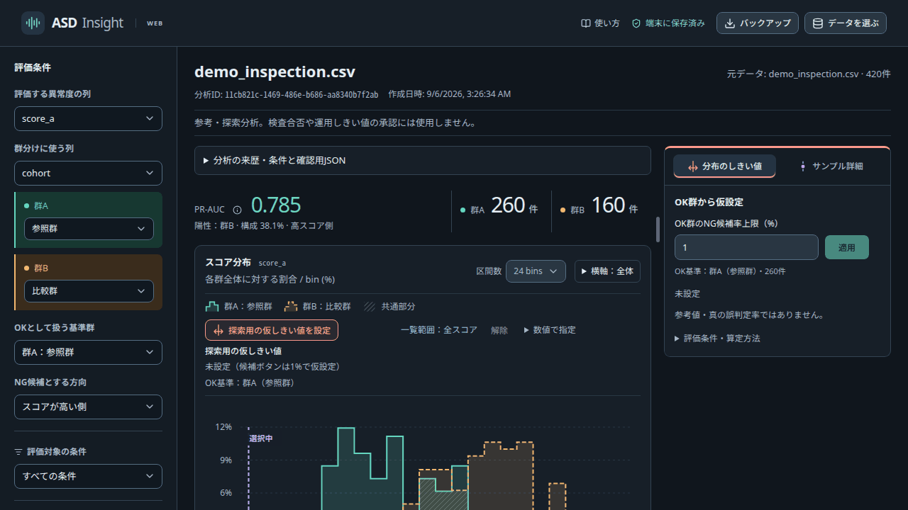
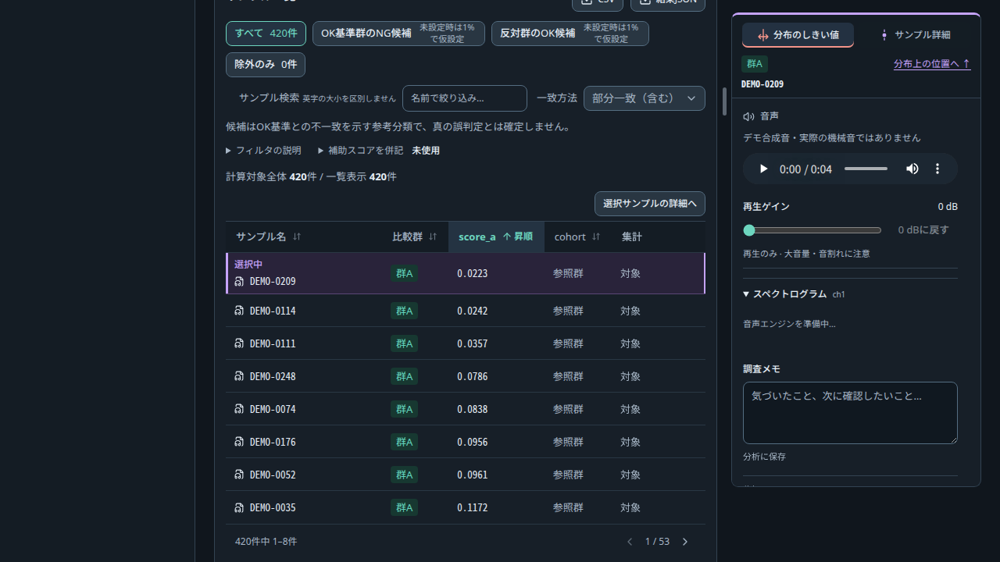
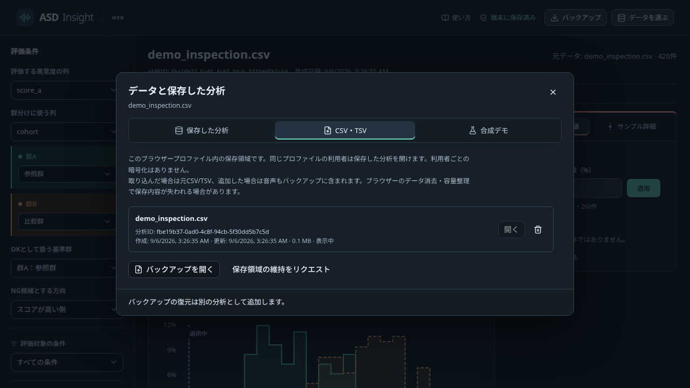

USER GUIDE
分布を見て、気になるサンプルを確認する
データを開いてから、5つの操作で2群の分布の重なりを調べます。
参考・探索分析です。検査合否や運用しきい値の承認には使用しません。
01
データを開く
「データを選ぶ」から、CSV・TSVまたは合成デモを開きます。
データを選ぶ → CSV・TSV → ファイルを選択
- スコア
- 数値
- 群分け
- 2値、または数値の境界
- サンプル / 音声
- 任意
音声は「試聴用の音声を追加」から別に選べます。音声なしでも分布の比較はできます。


02
評価条件をそろえる
「評価条件」で、異常度の列と群分けの列を選びます。
群A・群Bに対応する実際の値を確認し、OKとして扱う基準群と、NG候補にするスコアの向きを選びます。数値で群分けする場合は、群Aの上限以下と群Bの下限以上が対象です。
集計条件や手動除外は計算対象を変えます。一覧の範囲・名前検索・候補フィルターは表示を絞る操作です。「計算対象全体 / 一覧表示」の件数を分けて確認してください。
異常度 → 群分け → 基準群を確認
03
分布としきい値を見る
分布上をドラッグすると、気になるスコアの範囲だけに一覧を絞れます。「数値で指定」でも範囲を選べます。範囲を変えても、計算対象全体のPR-AUCは変わりません。
「OK群のNG候補率上限（%）」を指定して仮しきい値を設定します。同点は分割しないため、実測率が指定上限より低くなる場合があります。初期値の1%は操作用の仮値です。
しきい値は探索用の仮値です。「OK基準群のNG候補」「反対群のOK候補」は基準との不一致を示し、真の誤判定とは確定しません。
分布のしきい値ハンドルはドラッグや左右キーで調整できます。Escで取消できます。手動調整後は率の上限を保証しません。表示されたスコアの向きと比較演算子を確認してください。
ドラッグ → 範囲を確認 → しきい値を調整
1 範囲を絞る


2 しきい値を調整


04
サンプルを確認する
一覧の行を選ぶと、分布上の位置とサンプル詳細が切り替わります。音声があれば再生できます。
名前検索は「部分一致（含む）」と「完全一致」を選べます。英字の大小は区別しません。たとえば部分一致の「normal」は「abnormal」も含むため、1つの名前を指定する場合は完全一致を使います。
サンプルを除外すると計算対象から外れ、指標が再計算されます。除外理由を残し、必要なら「除外のみ」から復元できます。母集団が変わった仮しきい値は再設定してください。
波形・スペクトログラムの表示解析はch1です。再生ゲインは解析値を変えません。原音未対応の場合は、詳細に表示される理由を確認し、必要な音声を追加してください。名前の不一致なら、表示される対応候補のファイル名と照合します。
行を選択 → 詳細を確認 → 必要ならメモ


05
保存して再開する
画面上部の保存状態から分析を管理できます。次回は「データを選ぶ」から保存した分析を開きます。
同名の分析は分析ID・作成日時で区別します。「保存中」「未保存」「一時利用」「保存失敗」は「端末に保存済み」と異なる状態です。一時利用の内容はタブを閉じると失われます。
「分析の来歴・条件と確認用JSON」から評価条件、仮しきい値、一覧表示条件、除外・復元履歴、算定方法を確認できます。さらに「データ識別子・hash（全文）」または「確認用JSON（全文・読み取り専用）」を開くと詳しい記録を読めます。履歴が20件を超える場合、全履歴は確認用JSONに含まれます。
「結果JSON」は分析記録、「CSV」は現在の一覧のうち除外行を含まないデータです。元データと音声も含めて再開できるファイルを残すには「バックアップ」の.ovlab形式を使います。復元時は別の分析IDになります。
同じブラウザープロファイルを使う人は、保存した分析を開けます。SSOは端末内データを利用者別に暗号化するものではありません。ブラウザーデータの消去で失われるため、組織の保存方針に従ってバックアップを保管してください。
端末に保存済み → データを選ぶ → 保存した分析を開く
